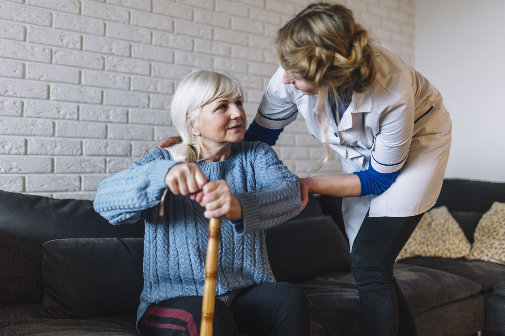

1
Bir hastanın evde alacağı sağlık hizmetleri yelpazesi oldukça geniştir. Birey gerekli şartları sağladığı koşulda hemen her konuda bakım hizmeti alabilir. Evde bakım hizmetleri şunları kapsar:
Sağlık hizmetleri: Evde sağlık hizmetleri, doktor ziyaretleri, ilaç takibi, yara bakımı,
tansiyon
ölçümü, kan testleri gibi sağlık kontrollerini içerir. Bir doktor veya bir hemşire bireyin ihtiyaçlarını periyodik olarak gözden geçirerek buna yönelik bir bakım planı hazırlar.
Kişisel bakım: Bu hizmetler, bireylerin temizlik, giyinme, yemek yeme ve tuvalet ihtiyaçlarını karşılamalarına yardımcı olmayı içerir.
Ev temizliği: Evde bakım hizmeti kapsamında, ev temizliği, çamaşır yıkama, ütü gibi ev işleriyle ilgili yardım sağlanabilir.
Beslenme hizmetleri: Evde yemek hazırlama, özel
diyet
gereksinimlerine uygun besinlerin sağlanması gibi hizmetler bu kategoride yer alır.
Fiziksel terapi ve rehabilitasyon: Evde fiziksel terapi ve rehabilitasyon hizmetleri, hareketlilik sorunları olan bireylere egzersizler ve tedavi yöntemleri ile destek olmayı amaçlar. Özellikle bazı bireyler yaralanma veya hastalık sonrasında günlük hayatlarına nasıl döneceklerini dair yardıma ihtiyaç duyabilirler. Hastanın hem fiziksel hem de zihinsel sağlığı göz önüne alınarak hastaya uygun bir bakım planı hazırlanır.
Sosyal destek: Evde bakım hizmetleri, bireylerin sosyal bağlarını sürdürebilmeleri için sosyal destek sağlamayı içerir. Bu destek, sosyal aktiviteler, arkadaşlık sağlama ve topluma katılımı teşvik etme gibi etkinlikleri içerebilir.
Bu hizmetler genellikle sağlık profesyonelleri, bakım verenler veya özel sağlık hizmeti sağlayıcıları tarafından sunulur.
Evde Bakım ve Destek:
Günlük yaşam aktivitelerinde yardım, özellikle yaşlı veya sakat bireyler için.
Yatağa bağımlı hastalara destek.
İlaç Yönetimi:
İlaçların doğru dozda ve zamanında alınmasının sağlanması.
İlaçların reçeteye uygun bir şekilde kullanılmasının takip edilmesi.
İntravenöz (IV) Tedaviler:
IV serum veya ilaç uygulamaları.
IV tedavi takibi ve yönetimi.
Yara Bakımı:
Yara temizliği ve pansuman uygulamaları.
Ameliyat sonrası yara bakımı.
İnfüzyon Tedavileri:
Sıvı infüzyonları ve besin takviyeleri.
Kemoterapi veya diğer tedavilerin evde uygulanması.
Fizik Tedavi ve Rehabilitasyon:
Fizik tedavi egzersizleri.
Rehabilitasyon süreçlerinin yönetimi.
Kan Basıncı ve Vital Bulguların Takibi:
Kan basıncı, nabız, solunum hızı gibi vital bulguların izlenmesi.
Hastanın genel sağlık durumunun takibi.
Laboratuvar ve Test Takibi:
Evde laboratuvar testlerinin alınması.
Sonuçların takibi ve değerlendirilmesi.
Solunum Tedavileri:
Solunum cihazlarının kullanımı ve takibi.
Solunum egzersizleri ve tedaviler.
Hastalık Yönetimi ve Eğitimi:
Kronik hastalıkların yönetimi.
Hastalık hakkında eğitim ve danışmanlık.
İşte evde sağlık hizmetlerinin sağladığı kolaylıklar:
Konfor ve Rahatlık:
Evde sağlık hizmetleri, hastaların kendi evlerinde tedavi görmelerine olanak tanır. Bu durum, hastaların aileleri ve kişisel eşyaları ile çevrili olmalarını sağlar, bu da psikolojik olarak olumlu bir etki yapabilir.
Kişiye Özel Hizmet:
Evde sağlık hizmetleri, bireylere daha kişiselleştirilmiş ve özel bir bakım sunma fırsatı verir. Sağlık profesyonelleri, hastaların bireysel ihtiyaçlarına uygun bir şekilde tedavi planları oluşturabilir.
Aile İle Birlikte Olma İmkanı:
Evde sağlık hizmetleri, hasta bireyin ailesi ve sevdikleri ile bir arada olmalarını sağlar. Bu, sosyal destek ve moral açısından önemlidir.
Hastane İnfeksiyonlarından Kaçınma:
Evde tedavi, hastane ortamlarındaki enfeksiyon riskini azaltır. Hastalar, kendi evlerinde daha kontrollü bir çevrede bulundukları için enfeksiyon riski daha düşüktür.
Zaman Tasarrufu:
Evde sağlık hizmetleri, hastaneye gitme, bekleme süreleri gibi zaman kaybını önler. Bu, hem hasta bireyin hem de bakım verenlerin zamanını daha etkili bir şekilde kullanmalarını sağlar.
Mobil Sağlık Teknolojileri:
Mobil sağlık uygulamaları ve telemedicine gibi teknolojiler, evde sağlık hizmetlerini daha erişilebilir kılar. Uzaktan sağlık takibi ve online konsültasyonlar, hastaların sağlık durumlarını yönetmelerine yardımcı olabilir.
Rehabilitasyon Hizmetleri:
Evde rehabilitasyon hizmetleri, hasta bireylerin kendi evlerinde fizik tedavi veya diğer rehabilitasyon hizmetlerini alma imkanı sunar.
Uzun Süreli Bakım:
Evde sağlık hizmetleri, kronik hastalıklara sahip bireylere uzun vadeli bakım sunabilir. Bu, hastaların sürekli kontrol altında olmalarını ve daha iyi yaşam kalitelerini sürdürmelerini sağlar.
Evde sağlık hizmetleri, sağlık hizmetlerini daha erişilebilir ve kişiselleştirilmiş kılarak hastaların daha iyi bir sağlık deneyimi yaşamalarına yardımcı olur. Bu hizmetler, özellikle yaşlı bireyler veya kronik hastalıkları olan kişiler için önemli bir destek sağlar.
